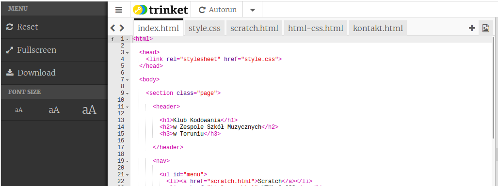
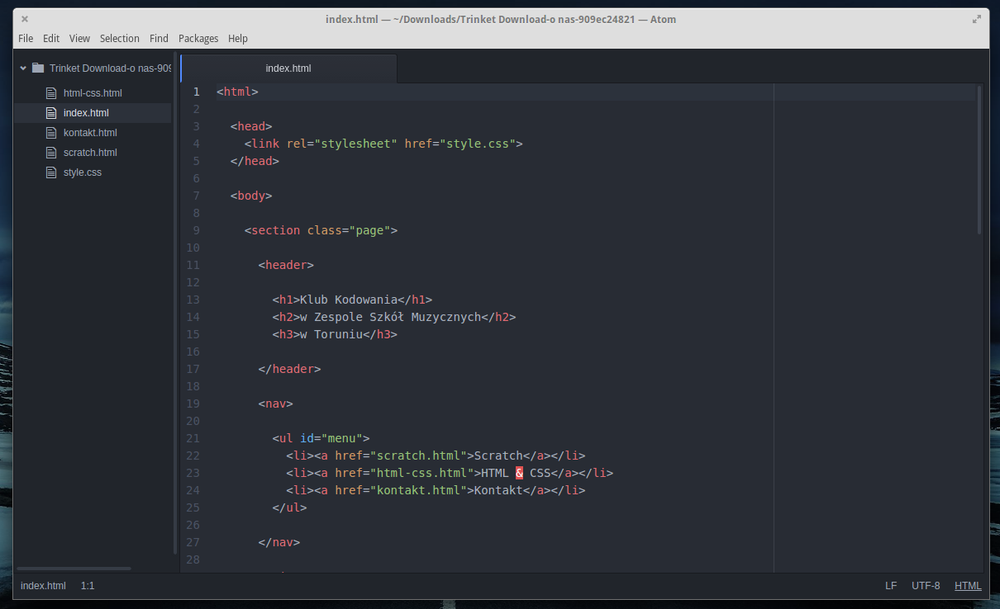

Wstęp
Dzisiaj dowiesz się, w jaki sposób możesz pracować ze swoją stroną internetową poza edytorem Trinket.
Pobieranie strony
Zadania do wykonania
-
Twoja strona żyje dotychczasz wyłącznie w edytorze Trinket. Takie edytory są bardzo wygodne, nie musisz pamiętać o robieniu kopii bezpieczeństwa, wystarczy zapisać prace będąc zalogowanym do Trinketa.
Zazwyczaj jednak strony internetowe tworzy się w inny sposób, wykorzystując edytory działające jako programy na komputerze, a strony wyświetlane są bezpośrednio w przeglądarce, a nie w okienku edytora.
-
Zacznijmy od pobrania naszej strony na dysk. Wybierz opcję
Downloadz menu edytora:
-
Teraz przeglądarka poprosi Cie o wybór miejsca do zapisania spakowanej strony. Wybierz odpowiednie miejsce, np. Moje dokumenty i kliknij "OK" lub "Zapisz".
-
Przejdź do miejsca, w którym zapisałeś stronę, znajdź plik
.zip, który właśnie pobrałeś i rozpakuj go. Przejdź do nowo utworzonego katalogu.Uwaga! Rozpakowywanie paczki
.zipwygląda inaczej w zależności od używanego systemu operacyjnego i oprogramowania, jeśli nie wiesz jak to zrobić, poproś o radę prowadzącego zajęcia. -
W katalogu powinieneś mieć plik
index.html, kliknij go dwukrotnie, aby otworzył się w przeglądarce.Uwaga! W zależności od systemu operacyjnego i ustawień, plik może nie otworzyć się automatycznie w przeglądarce. Jeśli masz problemy z jego wyświetleniem, poproś o pomoc prowadzącego zajęcia.
-
Jeśli wszystko poszło dobrze, powinieneś widzieć teraz swoją stronę internetową w pełnej okazałości!
Zapisz swój projekt
Edycja strony www
Zadania do wykonania
-
W celu edycji kodu naszej strony posłużymy się programem Atom, który jest popularnym i darmowym edytorem. Pobierz go i zainstaluj korzystając z instrukcji umieszczonej na stronie: www.atom.io
Uwaga! Strona jest w języku angielskim, jeśli masz problem z pobraniem i instalacją edytora, poproś o pomoc prowadzącego zajęcia.
-
Otwórz edytor Atom, wybierz z menu Plik opcję Otwórz folder i odnajdź rozpakowaną przez siebie wcześniej paczkę z plikami.
Po chwili powinieneś widzieć panel z plikami po lewej stronie edytora. Dwukrotnie kliknij na wybrany plik, aby rozpocząć jego edycję:

-
Jeżeli masz już otwartą swoją stronę w przeglądarce, kliknij przycisk "Odśwież" i zobacz, czy wprowadzone przez ciebie zmiany zostały zapisane. Teraz możesz już pracować ze swoją stroną na komputerze, nawet bez dostępu do internetu. Jeśli jednak wolisz Trinketa - śmiało możesz korzystać z niego dalej!:)
Zapisz swój projekt
Podziel się!
Pamiętasz z poprzednich zajęć, jak dzielić się swoją stroną? Jeśli tak, przejdź do Trinketa, wybierz opcję "Share" i wyślij link do swojej strony do prowadzącego zajęcia, na adres e-mail: kamil@zagrabski.com.